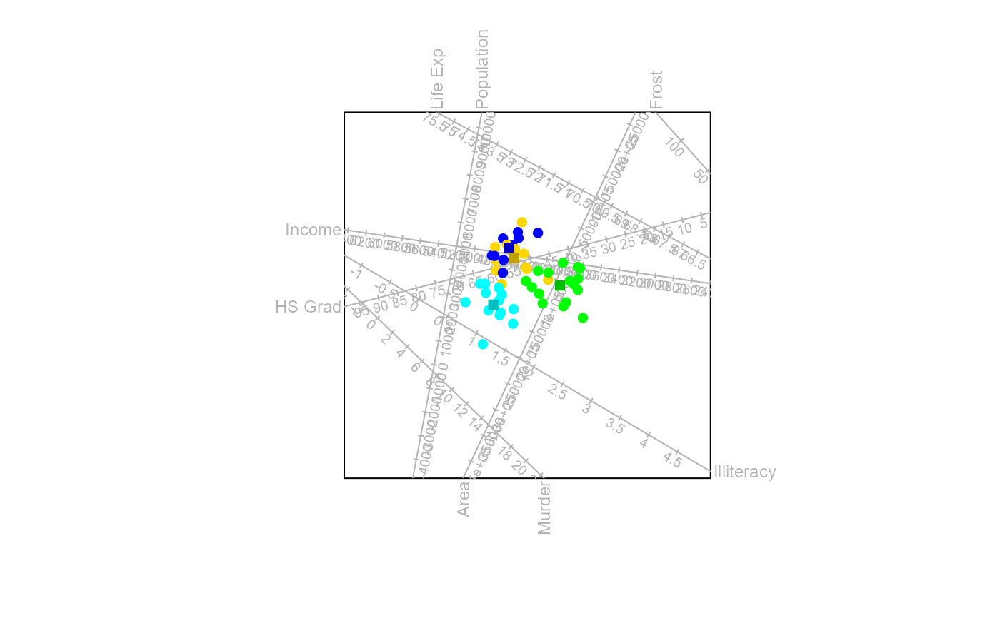
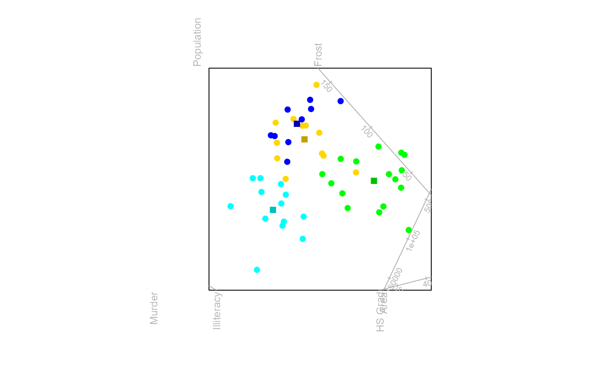

Translate biplot axes
translate_axes.RdAutomatically or manually translate the axes away from the center of the plot
Details
This function uses the same algorithm implemented in TDAbiplot
in the bipl5 package. It translates the axes out of the center of the plot.
Correlated axes generally gets translated in the same direction.
This function calculates the orthogx and orthogy paramaters in axes()
Examples
#Translate the axes out of the plot center
bp <- biplot(state.x77,scaled = TRUE)|>
CVA(state.region) |>
translate_axes(swop=TRUE,delta =0.2)|>
plot(exp.factor=3)

#adjust the distance of an axis
dist <- bp$axes$translate_distance
dist[7] <- 0.4
bp |> translate_axes(delta = 0.2, distances=dist) |> plot()
